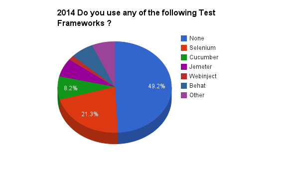
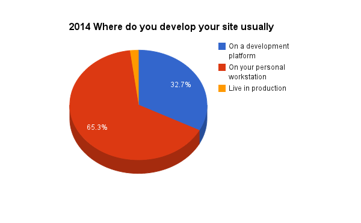
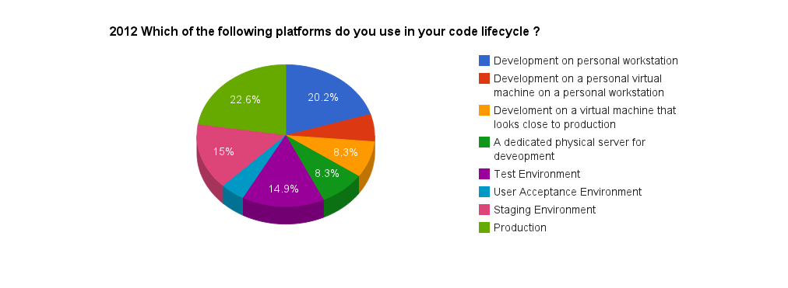
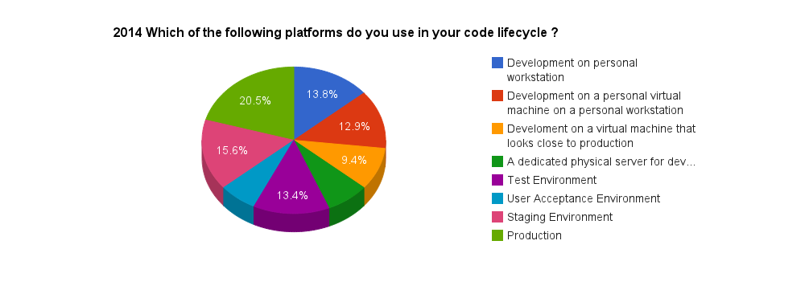

The State of Drupal DevOps
Kevin Bridges | @cyberswat
Director of Technology | @newmediadenver
The State of Drupal DevOps
Kevin Bridges | @cyberswat
Director of Technology | @newmediadenver
#cyberswat
- The name does not mean what you think it does. I'm not going to change that.
- I'm not a Drupal developer or a DevOps engineer.
- I'm an Open Source Technologist.
- Director of Technology @newmediadenver
- Worked on key Drupal projects: popsci.com, examiner.com, top secret
- Worked for some neat companies: pingV, Bonnier Corporation, Clarity Digital, Acquia
- Served as Coder Track Chair or DevOps Track Chair for multiple Drupalcons.
- Each project lead more into DevOps and further from Open Source.
- I'm on my way back to Open Source and bringing DevOps with me.
https://drupal.org/project/devops_survey
https://github.com/newmediadenver/presentations/presentations/state_of_drupal_devops_2014
Room: 10B - Blink Reaction | 3rd floor
Time slot: Thursday · 10:45-11:45
What is DevOps?
survey says ...
Let's clear this up from the people that know!
survey says ...
WTF was that?
So why are we here?
Because We All Need Virtualized Dev Environments!

Let's try that again.
So why are we here?
Open Source
Stories
Data

Gorilla attraction forms silos.
Open Source can change these silos.
You are crazy ... Let's see the Data!

- 
- 
- 
- 
- Let's give away an iPad!
/